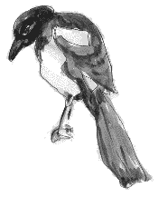

San Antonio, Texas, USA.
Lé 18 dé juîn, 1983.
Moussieu l'Rédacteu,
Quand j'tais en Califournie y'a eune tchînzaine, eune charmante danme, née en Jèrri, m'dît qu' oulle 'tait supèrstitieuse dé sa sorte et qu' oulle aimait liéthe mes lettres dans la gâzette entouôrre les vielles crianches dé nouos anciens. Ch'est en tchi j'mé sis décidé d'en ravigoter tchiqu'eunes.
Comme y'a tout pliein d'ouaîsieaux en Califournie, j'm'en vais c'menchi par vouos en dithe ieune entouôrre lé fanmeux coucou, ouaithe qué jé n'sai pon si y'en a dans chu bieau pays d'Califournie. Quand j'tais mousse en Jèrri, nou-s-attendait fête dé l'ouï quand v'nait lé r'nouvé, et ch'tait considéthé bouanne chance dé sonner les sou dans sa pouchette la preunmié fais nou l'ouiyait. Et l's anciens criyaient qué si nou l'faîsait, nou n'manqu'thait pon d'sou l'restant d'l'année.
Lé temps pâssé, les femmes ornaient lus chapieaux atout toutes sortes d'choses, prîncipalement des flieurs et tchiquefais des plieunmes. Mais ch'tait considéthé mauvaise chance dé faithe sèrvi un ail'ton d'pigeon ou d'teurtérelle comme ornément sus l'chapé. Et quand un ouothilyi 'tait remplyi d'plieunmes, ch'tait mauvaise chance d'y mett' des plieunmes dé pigeon et d'teurtérelle.
Y'a d'belles rouoge-gorges ichîn et en Califournie étout, comme en Jèrri. Les vièrs Jèrriais criyaient qué quand ieune v'nait en d'vant d'eune maîson ou vouos apportait d'bouannes nouvelles, mais ieune tchi v'nait en driéthe vouos en apportait d'mauvaises. Eune aut' crianche était quâsi la même. Ch'tait qué quand eune rouoge-gorge tapait à ieune des f'nêtres en d'vant, ch'tait bouanne chance, mais mauvaise chance s' ou tapait à eune fénêtre en driéthe.
Quand un pêtcheux est au baté, s'i' vait un cormouothan d'vant eune mauve, y'a eune vielle crianche tch'i' n'prendra pon d'paîsson. Mais s'i' vait eune mauve à c'menchi, ch'est bouanne chance.
 Lé temps pâssé y'avait même des crianches entouôrre les poules. Quand eune poule chantait en co ch'tait sîngne dé mort, nouos disaient l's anciens, et i' fallait lî teurtre l'co pour êviter l'malheu! Mais quand eune poule bait, ou lève la tête châque fais et ch'est pour èrmècier l'Bouân Dgieu. Et quand nou met eune poule à couer, ch'est supposé êt' sus douze oeus, mais i' faut li'en mett' treize pour bouanne chance.
Lé temps pâssé y'avait même des crianches entouôrre les poules. Quand eune poule chantait en co ch'tait sîngne dé mort, nouos disaient l's anciens, et i' fallait lî teurtre l'co pour êviter l'malheu! Mais quand eune poule bait, ou lève la tête châque fais et ch'est pour èrmècier l'Bouân Dgieu. Et quand nou met eune poule à couer, ch'est supposé êt' sus douze oeus, mais i' faut li'en mett' treize pour bouanne chance.
 La pie n'tait pon oubliée, affaithe dé crianches. L's anciens disaient: "Vaie pie volante, bouanne chance. Mais vaie eune pie, mauvaise chance ou du chagrîn; deux pies, bouanne chance ou jouaie; trais pies, sîngne dé neuches à v'nîn; quat' pies, sîngne dé naîssance." Et quand nou ouait eune pie caqu'ter, ch'est sîngne dé brit auve tchitch'un.
Eune aut' vielle crianche 'tait qué quand les cônelles font du combat en d'ssus d'eune maîson, ch'est sîngne dé mort dans la fanmil'ye.
Et i' n'faut pon oublier les belles papillotes tch'embellissent l'air atout lus ailes dé toutes les couleurs en êté. L's anciens nouos disaient tch'i' n'fallait pon faithe dé ma ès blianches, car i' sont l's esprits d'nouos anchêtres tchi veinnent nouos r'vaie!
 Les crianches des anciens au sujet des moûques à myi sont hardi întérêssantes. Quand la mort pâssait dans la fanmil'ye, i' fallait aller à la rueûque (ou ès rueûques) lé faithe à saver ès moûques à myi, pâlant en bas et en tapant douochement sus la rueûque. L's uns l'faîsaient atout la clié d'la maîson à la main. Et pis i' fallait pendre un p'tit morcé d'crêpe sus chatcheune des rueûques pour porter l'deu. Si nou mantchait à faithe tout ch'là, les moûques à myi mouothaient ou abandonnaient lus rueûques. À m'n idée, né v'là eune couôteunme plieine dé sentiment et d'natuthé pour les moûques tchi travâllent si dû pour nouos donner du myi. L's anciens criyaient, étout, qué s'i' y'avait du train entre l's héthitchièrs dévant l'entèrrement du défunt, toute la rueûtchie mouothait. Appathemment, chutte crianche 'tait eune bouanne idée pour encouothagi l's héthitchièrs à prêsèrver l'respé pour lé défunt quandi qu'san corps 'tait au suaithe.
Les crianches des anciens au sujet des moûques à myi sont hardi întérêssantes. Quand la mort pâssait dans la fanmil'ye, i' fallait aller à la rueûque (ou ès rueûques) lé faithe à saver ès moûques à myi, pâlant en bas et en tapant douochement sus la rueûque. L's uns l'faîsaient atout la clié d'la maîson à la main. Et pis i' fallait pendre un p'tit morcé d'crêpe sus chatcheune des rueûques pour porter l'deu. Si nou mantchait à faithe tout ch'là, les moûques à myi mouothaient ou abandonnaient lus rueûques. À m'n idée, né v'là eune couôteunme plieine dé sentiment et d'natuthé pour les moûques tchi travâllent si dû pour nouos donner du myi. L's anciens criyaient, étout, qué s'i' y'avait du train entre l's héthitchièrs dévant l'entèrrement du défunt, toute la rueûtchie mouothait. Appathemment, chutte crianche 'tait eune bouanne idée pour encouothagi l's héthitchièrs à prêsèrver l'respé pour lé défunt quandi qu'san corps 'tait au suaithe.
Eune belle couôteunme, étout, au sujet des moûques à myi 'tait qué quand i' y'avait des neuches dans la fanmil'ye, i' fallait lus l'faithe à saver en pendant un mio d'blianc riban ès rueûques. Et cèrtaines gens n'éthaient pon vendu un êssaim. I' fallait l'êchangi pour aut' chose dé la même valeu, ofûche eune vaque à lait. V'là tchi montre qu' un êssaim avait d'la valeu aut' fais! D'aut's disaient qu' nou pouvait vendre un êssaim, mais seulement pour dé l'or!
Bibliographie: Les Bulletîns d'Quart d'An d'L'Assembliée d'Jèrriais.
Viyiz étout: